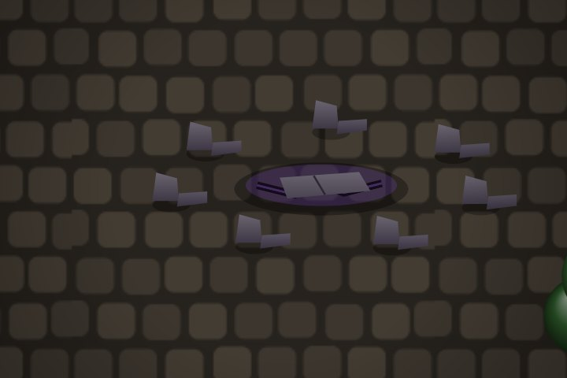
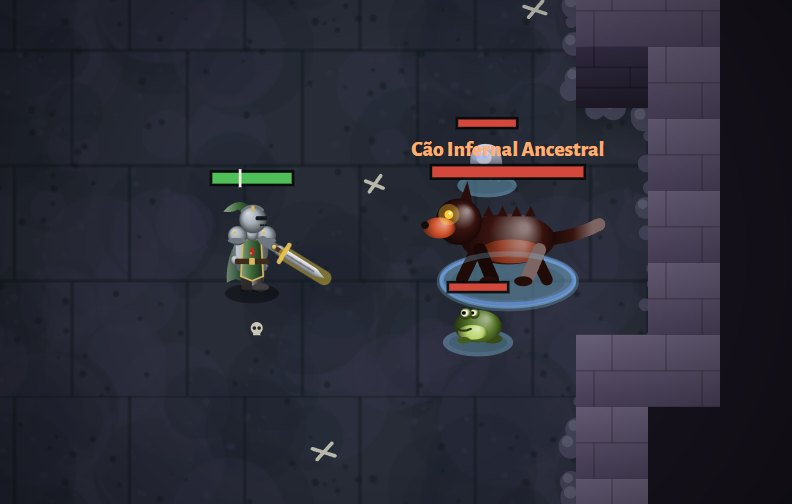

A Fenda e as Pedras da Masmorra
O fim de jogo do Loner. No nível 40 a Fenda desperta na vila; você encaixa uma Pedra da Masmorra nela e enfrenta uma corrida de 5 minutos contra 100 criaturas e um Chefe. Cada nível de Pedra é 25% mais forte, sem limite, e a sua maior Pedra vai para o ranking.
Tutorial passo a passo
Chegue ao nível 40
Antes disso a Fenda fica selada: um círculo de pedras caídas no canto de baixo à direita da vila, com a placa "Fenda selada · nível 40". Ao subir para o 40 aparece no registro: "Alguém espera por você na vila…".

A Fenda selada, antes do nível 40. Volte para a vila e conheça o Ezequiel
Ao entrar na vila no nível 40 começa uma cena: o Ezequiel (manto azul, capuz e cajado de cristal roxo) vem até você, conversa e leva o herói até a Fenda. A Fenda desperta ("A FENDA DESPERTOU") e ele te dá a primeira Pedra 1. Toque na caixa de fala (ou Enter/espaço) para passar; "Pular" também dá a Pedra.
Ande até a Fenda
Uma seta roxa aparece em cima dela. Chegando perto, abre a aba A Fenda · Masmorra. Do lado fica a Mesa Rúnica do Ezequiel.

A Fenda aberta, as pedras com runas e, à esquerda, o Ezequiel e a Mesa Rúnica. Escolha a Pedra e entre
Na aba, use − e + para escolher entre as Pedras que você tem e toque em "Encaixar a Pedra N e entrar". A Pedra é gasta na hora e o tipo de dano da corrida é sorteado (Fogo, Gelo, Raio ou Veneno).
Mate as criaturas em 5 minutos
O relógio aparece no minimapa e na barra de cima, com quantas faltam. No último minuto ele fica vermelho. O chão da Masmorra fica com a cor do elemento sorteado.
Derrote o Chefe
Mortas todas, "O CHEFE APARECEU!": uma criatura gigante com nome "… Ancestral", anel no chão da cor do elemento e 3 ajudantes. Desvie das marcas no chão!

O Chefe da Masmorra com um dos ajudantes. Pegue a Pedra e volte
O Chefe sempre deixa uma Pedra do mesmo nível e 3 itens extras. Aparece "PEDRA N CONCLUÍDA!", a sua melhor Pedra sobe no ranking e o botão Voltar à vila brilha.
As Pedras da Masmorra
- Ficam na aba Pedras da mochila (ela só aparece depois que a Fenda desperta), com a quantidade de cada nível.
- Não ocupam espaço de item e não somem do chão.
- Só caem depois que a Fenda desperta.
Onde caem
Mesa Rúnica do Ezequiel
Fica ao lado da Fenda (veja a imagem do passo 3). Grátis, só na vila:
- Pedras N viram 1 Pedra N+1. É o jeito de subir de nível mais rápido.
- 1 Pedra N volta a ser 1 Pedra N−1, se quiser fazer uma corrida mais fácil.
A corrida
- criaturas de todos os mapas, no nível 40, todas causando o dano do elemento sorteado.
- Vida e dano × 1,25 para cada nível de Pedra acima do 1 (Pedra 2 = 125%, Pedra 3 = 156%...). A XP sobe junto.
- Grupos de até 10 criaturas.
- Tempo: 5 minutos até o Chefe morrer.
- Perde a Pedra se: morrer, sair antes de matar o Chefe ou deixar o tempo acabar ("TEMPO ESGOTADO!" e você volta para a vila).
O Chefe
Força por nível de Pedra
Dicas
- Olhe o elemento sorteado ao entrar: resistência alta nele faz muita diferença (máximo 75%). Ter as 4 resistências equilibradas é o mais seguro.
- Não pare para pegar tudo: 5 minutos para 100 criaturas é 1 a cada 3 segundos. Junte grupos e use as habilidades em área.
- Guarde a ultimate e a suprema para o Chefe.
- O Chefe e os ajudantes usam golpes em área com marca no chão: saia da marca. Ser pego dói 2,5 vezes mais.
- Suba de Pedra devagar: se a corrida ficou apertada no tempo, junte Pedras na Mesa Rúnica antes de subir.